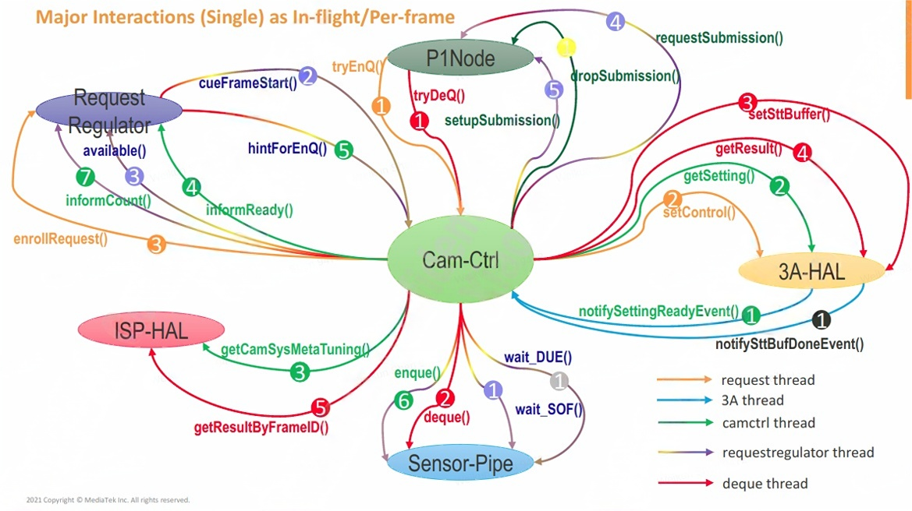

MTKcam-ISP7-CamCtrl
文章目录
CamCtrl简介：
文件目录：vendor/mediatek/proprietary/hardware/mtkcam-core/hw/camsys/cam_ctrl/
CamCtrl是P1Node/PipeMgr/3A HAL/ISP HAL的协调者。其主要有两个作用：
- 搜集从P1 Node过来的request Info，然后queue给driver（使用PipeMgr并通过SensorPipe接口丢给MTK drivers):
request Info包含： - Image Info. (from P1Node)，例如上层传下来的buffer size，format等
- Setting (from 3A-HAL)，例如需要给到driver的gain值，曝光等
- Tuning (from ISP-HAL)，例如从tuning参数中获取的信息等
- 从driver中做deque(使用PipeMgr并通过SensorPipe接口),并将结果传递给用户：
- Image buffer(to P1Node)
- STT buffer(to 3A HAL)，如AAO，AFO等统计信息
更多可以参考：ISP7-Camsys Hw-Lib
CamCtrl基本流程:

如上图，描述的是CamCtrl与其它模块相互交互时使用的function。不同颜色的线代表不同的线程，其中requestregulator thread是混色的，代表包含多个线程(实现同一功能)。同一颜色的不同标号代表一串事件的先后顺序。
request thread:
- 当Pipeline model Queue一个request到P1 Node时，P1 Node会调用的Camtrl的tryEnQ()往Camtrl塞request
- 随后CamCtrl会调用到3A-HAL的setControl()，把当前request带下来的metadata数据设置到3A-HAL中，让3A-HAL去做一些预处理。
- 同时，CamCtrl还会调用到RequestRegulator中的enrollRequest()函数，通知RequestRegulator，CamCtrl收到了一帧request，并且已将其相关的metadata参数设置到了3A-HAL。此信息将用于控制request的节奏。
requestRegulator thread:
- RequestRegulator有一个线程会通过CamCtrl去调用到Sensor-Pipe的wait-SOF()，去等待sof信号。
- 当RequestRegulator收到sof信号后，会通过CamCtrl的cueFrameStart()去triggerFrameStart（我理解是触发接收下一个request）。
- CamCtrl调用RequestRegulator的available()去确认request的节奏，CamCtrl是否可以接收下一个request。
- 若能接收下一个quest，CamCtrl会调用到P1 Node的requestSubmission()，告诉P1 Node可以继续tryEnQ()塞request下来了。
- 于此同时,CamCtrl会通过P1 Node的setupSubmission(),去获取上一个request的image buffer。
deque thread:
- P1 Node会调用CamCtrl的tryDeQ()。tryDeQ()是blocking code，所以只有当真正的driver那边吐出data，CamCtrl的tryDeQ才会被完成，这个时候P1 Node就可以拿到result的数据。
- CamCtrl的tryDeQ()实际会去调用Sensor-Pipe的deque()，然后等待driver deque数据出来。这个数据包括Image buffer和STT buffer。
- 当Sensor-Pipe deque出数据之后，首先CamCtrl会调用3A-HAL 的setSttBuffer()，将统计数据设置到3A-HAL
- CamCtrl调用3A-HAL的getResult()，去获取3A的result meta。
- CamCtrl调用ISP-HAL的getResultByFrameID()，去获取ISP的result meta。
CamCtrl thread/3A thread:
- 当deque thread的第3步，CamCtrl通过setSttBuffer将统计数据给到3A-HAL后，若3A-HAL使用完，会调用notifySettingReadyEvent()告诉CamCtrl有一个request的结果计算完成了。
- CamCtrl调用3A-HAL的getSetting()，拿到3A-HAL的计算结果。
- CamCtrl调用ISP-HAL的getCamSysMetaTuning()，拿到ISP-HAL的计算结果。
- 前面2(getSetting())，3(getCamSysMetaTuning())，结合requestRegulator thread中的5(setupSubmission())，这里就获取到了3份数据（3A-HAL的计算结果，ISP-HAL的计算结果，Image Buffer），此时所有数据准备就绪，就可以通过CamCtrl去调用RequestRegulator的informReady()，通知RequestRegulator已经CamCtrl已经准备好了，可以enque了。
- RequestRegulator调用CamCtrl的hintForEnQ(),去通知CamCtrl做enque。
- CamCtrl去做enque。
- 当CamCtrl做完enque之后，CamCtrl会调用RequestRegulator的informCount，去告诉RequestRegulator，我已经往driver做enque了。之所以要告诉RequestRegulator，是因为RequestRegulator要控制enque的节奏，避免driver中累积太多的request。
参考：[ISP7]CAMSYS_HW-Lib_P1Node_CamCtrl.pdf